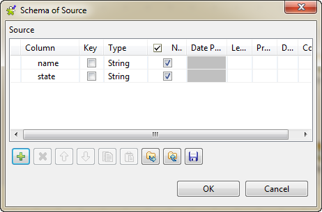
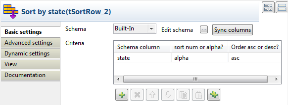

Component family | Orchestration | |
Function | Duplicate the incoming schema into two identical output flows. | |
Purpose | Allows you to perform different operations on the same schema. | |
Basic settings | Schema type and Edit Schema | A schema is a row description, i.e., it defines the number of fields that will be processed and passed on to the next component. The schema is either built-in or remote in the Repository. If you are using Talend Open Studio for Big Data, only the Built-in mode is available. Click Edit schema to make changes to the schema. Note that if you make changes to a remote schema, the schema automatically becomes built-in. Click Sync columns to retrieve the schema from the previous component in the Job. |
|
| Built-in: The schema will be created and stored locally for this component only. Related topic: see Talend Open Studio User Guide. |
|
| Repository: The schema already exists and is stored in the Repository, hence can be reused in various projects and Job designs. Related topic: see Talend Open Studio User Guide. |
Usage | This component is not startable (green background), it requires an Input component and an output component. | |
Connections |
| Outgoing links (from one component to another): Row: Main. Trigger: Run if; On Component Ok; On Component Error.
Incoming links (from one component to another): Row: Main; Reject;
For further information regarding connections, see Talend Open Studio User Guide. |
The scenario describes a Job that reads an input flow which contains names and states from a CSV file, replicates the input flow, then sorts the two identical flows based on name and state respectively, and displays the sorted data on the console.
Drop the following components from the Palette to the design workspace: one tFileInputDelimited component, one tReplicate component, two tSortRow components, and two tLogRow components.
Connect tFileInputDelimited to tReplicate using a Row > Main link.
Repeat the step above to connect tReplicate to two tSortRow components respectively and connect tSortRow to tLogRow.
Label the components to better identify their functions.
Double-click the tFileInputDelimited component to open its Basic settings view in the Component tab.

Click the [...] button next to the File name/Stream field to browse to the file from which you want to read the input flow. In this example, the input file is Names&States.csv, which contains two columns: name and state.
name;state Andrew Kennedy;Mississippi Benjamin Carter;Louisiana Benjamin Monroe;West Virginia Bill Harrison;Tennessee Calvin Grant;Virginia Chester Harrison;Rhode Island Chester Hoover;Kansas Chester Kennedy;Maryland Chester Polk;Indiana Dwight Nixon;Nevada Dwight Roosevelt;Mississippi Franklin Grant;Nebraska
Fill in the Header, Footer and Limit fields according to your needs. In this example, type in 1 in the Header field to skip the first row of the input file.
Click Edit schema to define the data structure of the input flow.
Double-click the first tSortRow component to open its Basic settings view.

In the Criteria panel, click the [+] button to add one row and set the sorting parameters for the schema column to be processed. To sort the input data by name, select name under Schema column. Select alpha as the sorting type and asc as the sorting order.
For more information about those parameters, see the section called “tSortRow properties”.
Double-click the second tSortRow component and repeat the step above to define the sorting parameters for the state column.
In the Basic settings view of each tLogRow component, select Table in the Mode area for a better view of the Job execution result.